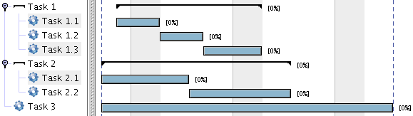

GanttProject - Добавяне на нова задача
Първо, добавете нова задача, като използвате от бутона Нова задача или директно от менюто Задачи изберете Нова задача
Задачите се подреждат в дървото на лявото пано; там можете директно да сменяте техните имена.
След това, можете да организирате задачите, като използвате идентация за да ги организирате
в групи или категории. Така можете да създадете йерархия като показаната по-долу:

Задачите могат да бъдат реорганизирани с функциите надолу и нагоре. Тези функции преместват задачите нагоре или надолу в йерархията, променяйки техния ред.